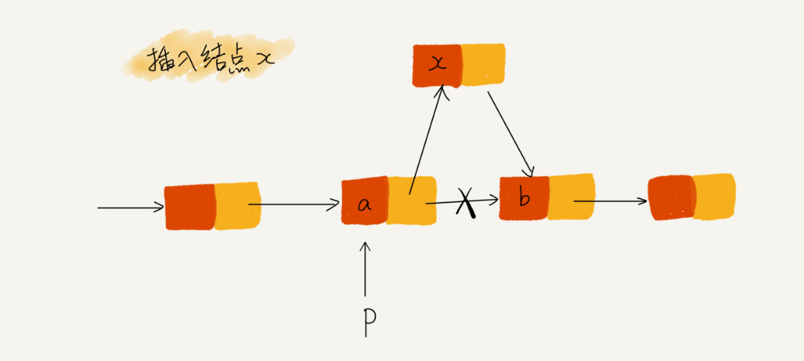

07 | 链表（下）：如何轻松写出正确的链表代码？
上一节我讲了链表相关的基础知识。学完之后，我看到有人留言说，基础知识我都掌握了，但是写链表代码还是很费劲。哈哈，的确是这样的！
想要写好链表代码并不是容易的事儿，尤其是那些复杂的链表操作，比如链表反转、有序链表合并等，写的时候非常容易出错。从我上百场面试的经验来看，能把“链表反转”这几行代码写对的人不足 10%。
为什么链表代码这么难写？究竟怎样才能比较轻松地写出正确的链表代码呢？
只要愿意投入时间，我觉得大多数人都是可以学会的。比如说，如果你真的能花上一个周末或者一整天的时间，就去写链表反转这一个代码，多写几遍，一直练到能毫不费力地写出 Bug free 的代码。这个坎还会很难跨吗？
当然，自己有决心并且付出精力是成功的先决条件，除此之外，我们还需要一些方法和技巧。我根据自己的学习经历和工作经验，总结了几个写链表代码技巧。如果你能熟练掌握这几个技巧，加上你的主动和坚持，轻松拿下链表代码完全没有问题。
技巧一：理解指针或引用的含义
事实上，看懂链表的结构并不是很难，但是一旦把它和指针混在一起，就很容易让人摸不着头脑。所以，要想写对链表代码，首先就要理解好指针。
我们知道，有些语言有“指针”的概念，比如 C 语言；有些语言没有指针，取而代之的是“引用”，比如 Java、Python。不管是“指针”还是“引用”，实际上，它们的意思都是一样的，都是存储所指对象的内存地址。
接下来，我会拿 C 语言中的“指针”来讲解，如果你用的是 Java 或者其他没有指针的语言也没关系，你把它理解成“引用”就可以了。
实际上，对于指针的理解，你只需要记住下面这句话就可以了：
将某个变量赋值给指针，实际上就是将这个变量的地址赋值给指针，或者反过来说，指针中存储了这个变量的内存地址，指向了这个变量，通过指针就能找到这个变量。
这句话听起来还挺拗口的，你可以先记住。我们回到链表代码的编写过程中，我来慢慢给你解释。
在编写链表代码的时候，我们经常会有这样的代码：p->next=q。这行代码是说，p 结点中的 next 指针存储了 q 结点的内存地址。
还有一个更复杂的，也是我们写链表代码经常会用到的：p->next=p->next->next。这行代码表示，p 结点的 next 指针存储了 p 结点的下下一个结点的内存地址。
掌握了指针或引用的概念，你应该可以很轻松地看懂链表代码。恭喜你，已经离写出链表代码近了一步！
技巧二：警惕指针丢失和内存泄漏
不知道你有没有这样的感觉，写链表代码的时候，指针指来指去，一会儿就不知道指到哪里了。所以，我们在写的时候，一定注意不要弄丢了指针。
指针往往都是怎么弄丢的呢？我拿单链表的插入操作为例来给你分析一下。

如图所示，我们希望在结点 a 和相邻的结点 b 之间插入结点 x，假设当前指针 p 指向结点 a。如果我们将代码实现变成下面这个样子，就会发生指针丢失和内存泄露。
p->next = x; // 将 p 的 next 指针指向 x 结点；
x->next = p->next; // 将 x 的结点的 next 指针指向 b 结点；
初学者经常会在这儿犯错。p->next 指针在完成第一步操作之后，已经不再指向结点 b 了，而是指向结点 x。第 2 行代码相当于将 x 赋值给 x->next，自己指向自己。因此，整个链表也就断成了两半，从结点 b 往后的所有结点都无法访问到了。
对于有些语言来说，比如 C 语言，内存管理是由程序员负责的，如果没有手动释放结点对应的内存空间，就会产生内存泄露。所以，我们插入结点时，一定要注意操作的顺序，要先将结点 x 的 next 指针指向结点 b，再把结点 a 的 next 指针指向结点 x，这样才不会丢失指针，导致内存泄漏。所以，对于刚刚的插入代码，我们只需要把第 1 行和第 2 行代码的顺序颠倒一下就可以了。
同理，删除链表结点时，也一定要记得手动释放内存空间，否则，也会出现内存泄漏的问题。当然，对于像 Java 这种虚拟机自动管理内存的编程语言来说，就不需要考虑这么多了。
技巧三：利用哨兵简化实现难度
首先，我们先来回顾一下单链表的插入和删除操作。如果我们在结点 p 后面插入一个新的结点，只需要下面两行代码就可以搞定。
new_node->next = p->next;
p->next = new_node;
但是，当我们要向一个空链表中插入第一个结点，刚刚的逻辑就不能用了。我们需要进行下面这样的特殊处理，其中 head 表示链表的头结点。所以，从这段代码，我们可以发现，对于单链表的插入操作，第一个结点和其他结点的插入逻辑是不一样的。
if (head == null) {
head = new_node;
}
我们再来看单链表结点删除操作。如果要删除结点 p 的后继结点，我们只需要一行代码就可以搞定。
p->next = p->next->next;
但是，如果我们要删除链表中的最后一个结点，前面的删除代码就不 work 了。跟插入类似，我们也需要对于这种情况特殊处理。写成代码是这样子的：
if (head->next == null) {
head = null;
}
从前面的一步一步分析，我们可以看出，针对链表的插入、删除操作，需要对插入第一个结点和删除最后一个结点的情况进行特殊处理。这样代码实现起来就会很繁琐，不简洁，而且也容易因为考虑不全而出错。如何来解决这个问题呢？
技巧三中提到的哨兵就要登场了。哨兵，解决的是国家之间的边界问题。同理，这里说的哨兵也是解决“边界问题”的，不直接参与业务逻辑。
还记得如何表示一个空链表吗？head=null 表示链表中没有结点了。其中 head 表示头结点指针，指向链表中的第一个结点。
如果我们引入哨兵结点，在任何时候，不管链表是不是空，head 指针都会一直指向这个哨兵结点。我们也把这种有哨兵结点的链表叫带头链表。相反，没有哨兵结点的链表就叫作不带头链表。
我画了一个带头链表，你可以发现，哨兵结点是不存储数据的。因为哨兵结点一直存在，所以插入第一个结点和插入其他结点，删除最后一个结点和删除其他结点，都可以统一为相同的代码实现逻辑了。

实际上，这种利用哨兵简化编程难度的技巧，在很多代码实现中都有用到，比如插入排序、归并排序、动态规划等。这些内容我们后面才会讲，现在为了让你感受更深，我再举一个非常简单的例子。代码我是用 C 语言实现的，不涉及语言方面的高级语法，很容易看懂，你可以类比到你熟悉的语言。
代码一：
// 在数组 a 中，查找 key，返回 key 所在的位置
// 其中，n 表示数组 a 的长度
int find(char* a, int n, char key) {
// 边界条件处理，如果 a 为空，或者 n<=0，说明数组中没有数据，就不用 while 循环比较了
if(a == null || n <= 0) {
return -1;
}
int i = 0;
// 这里有两个比较操作：i<n 和 a[i]==key.
while (i < n) {
if (a[i] == key) {
return i;
}
++i;
}
return -1;
}
代码二：
// 在数组 a 中，查找 key，返回 key 所在的位置
// 其中，n 表示数组 a 的长度
// 我举 2 个例子，你可以拿例子走一下代码
// a = {4, 2, 3, 5, 9, 6} n=6 key = 7
// a = {4, 2, 3, 5, 9, 6} n=6 key = 6
int find(char* a, int n, char key) {
if(a == null || n <= 0) {
return -1;
}
// 这里因为要将 a[n-1] 的值替换成 key，所以要特殊处理这个值
if (a[n-1] == key) {
return n-1;
}
// 把 a[n-1] 的值临时保存在变量 tmp 中，以便之后恢复。tmp=6。
// 之所以这样做的目的是：希望 find() 代码不要改变 a 数组中的内容
char tmp = a[n-1];
// 把 key 的值放到 a[n-1] 中，此时 a = {4, 2, 3, 5, 9, 7}
a[n-1] = key;
int i = 0;
// while 循环比起代码一，少了 i<n 这个比较操作
while (a[i] != key) {
++i;
}
// 恢复 a[n-1] 原来的值, 此时 a= {4, 2, 3, 5, 9, 6}
a[n-1] = tmp;
if (i == n-1) {
// 如果 i == n-1 说明，在 0...n-2 之间都没有 key，所以返回 -1
return -1;
} else {
// 否则，返回 i，就是等于 key 值的元素的下标
return i;
}
}
对比两段代码，在字符串 a 很长的时候，比如几万、几十万，你觉得哪段代码运行得更快点呢？答案是代码二，因为两段代码中执行次数最多就是 while 循环那一部分。第二段代码中，我们通过一个哨兵 a[n-1] = key，成功省掉了一个比较语句 i<n，不要小看这一条语句，当累积执行万次、几十万次时，累积的时间就很明显了。
当然，这只是为了举例说明哨兵的作用，你写代码的时候千万不要写第二段那样的代码，因为可读性太差了。大部分情况下，我们并不需要如此追求极致的性能。
技巧四：重点留意边界条件处理
软件开发中，代码在一些边界或者异常情况下，最容易产生 Bug。链表代码也不例外。要实现没有 Bug 的链表代码，一定要在编写的过程中以及编写完成之后，检查边界条件是否考虑全面，以及代码在边界条件下是否能正确运行。
我经常用来检查链表代码是否正确的边界条件有这样几个：
- 如果链表为空时，代码是否能正常工作？
- 如果链表只包含一个结点时，代码是否能正常工作？
- 如果链表只包含两个结点时，代码是否能正常工作？
- 代码逻辑在处理头结点和尾结点的时候，是否能正常工作？
当你写完链表代码之后，除了看下你写的代码在正常的情况下能否工作，还要看下在上面我列举的几个边界条件下，代码仍然能否正确工作。如果这些边界条件下都没有问题，那基本上可以认为没有问题了。
当然，边界条件不止我列举的那些。针对不同的场景，可能还有特定的边界条件，这个需要你自己去思考，不过套路都是一样的。
实际上，不光光是写链表代码，你在写任何代码时，也千万不要只是实现业务正常情况下的功能就好了，一定要多想想，你的代码在运行的时候，可能会遇到哪些边界情况或者异常情况。遇到了应该如何应对，这样写出来的代码才够健壮！
技巧五：举例画图，辅助思考
对于稍微复杂的链表操作，比如前面我们提到的单链表反转，指针一会儿指这，一会儿指那，一会儿就被绕晕了。总感觉脑容量不够，想不清楚。所以这个时候就要使用大招了，举例法和画图法。
你可以找一个具体的例子，把它画在纸上，释放一些脑容量，留更多的给逻辑思考，这样就会感觉到思路清晰很多。比如往单链表中插入一个数据这样一个操作，我一般都是把各种情况都举一个例子，画出插入前和插入后的链表变化，如图所示：

看图写代码，是不是就简单多啦？而且，当我们写完代码之后，也可以举几个例子，画在纸上，照着代码走一遍，很容易就能发现代码中的 Bug。
技巧六：多写多练，没有捷径
如果你已经理解并掌握了我前面所讲的方法，但是手写链表代码还是会出现各种各样的错误，也不要着急。因为我最开始学的时候，这种状况也持续了一段时间。
现在我写这些代码，简直就和“玩儿”一样，其实也没有什么技巧，就是把常见的链表操作都自己多写几遍，出问题就一点一点调试，熟能生巧！
所以，我精选了 5 个常见的链表操作。你只要把这几个操作都能写熟练，不熟就多写几遍，我保证你之后再也不会害怕写链表代码。
- 单链表反转
- 链表中环的检测
- 两个有序的链表合并
- 删除链表倒数第 n 个结点
- 求链表的中间结点
内容小结
这节我主要和你讲了写出正确链表代码的六个技巧。分别是理解指针或引用的含义、警惕指针丢失和内存泄漏、利用哨兵简化实现难度、重点留意边界条件处理，以及举例画图、辅助思考，还有多写多练。
我觉得，写链表代码是最考验逻辑思维能力的。因为，链表代码到处都是指针的操作、边界条件的处理，稍有不慎就容易产生 Bug。链表代码写得好坏，可以看出一个人写代码是否够细心，考虑问题是否全面，思维是否缜密。所以，这也是很多面试官喜欢让人手写链表代码的原因。所以，这一节讲到的东西，你一定要自己写代码实现一下，才有效果。
课后思考
今天我们讲到用哨兵来简化编码实现，你是否还能够想到其他场景，利用哨兵可以大大地简化编码难度？
我已将本节内容相关的详细代码更新到 GitHub，戳此即可查看。